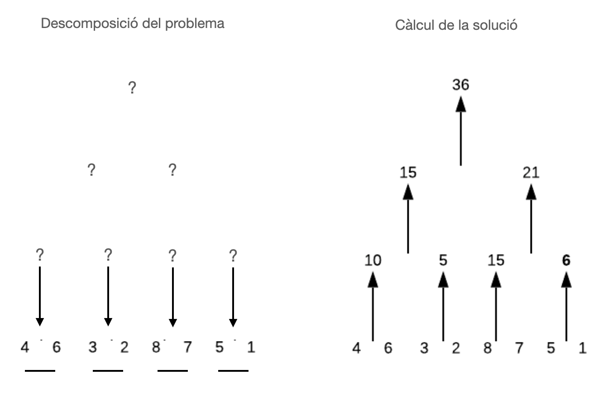
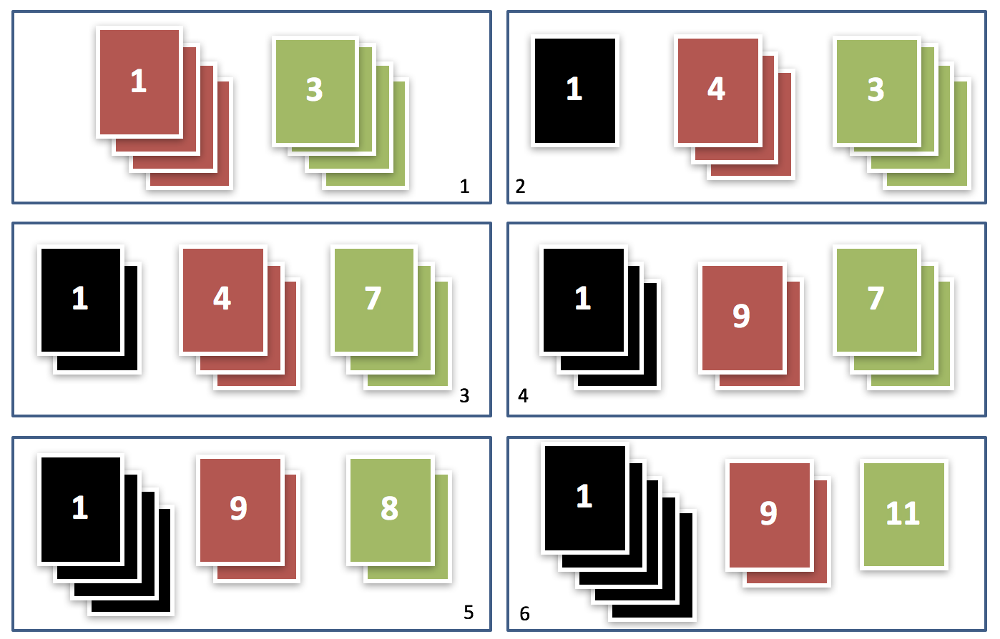
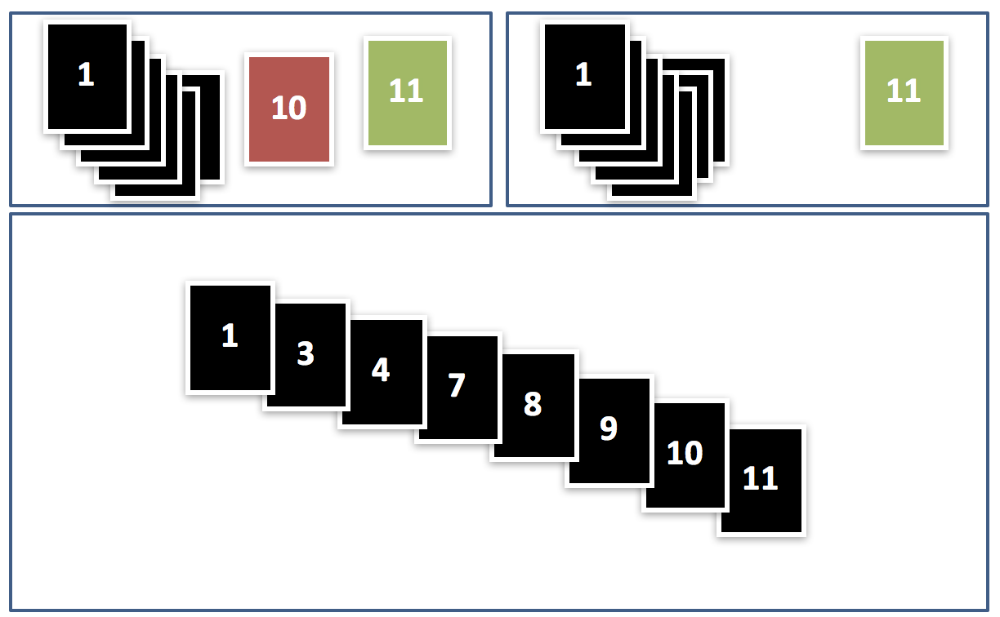
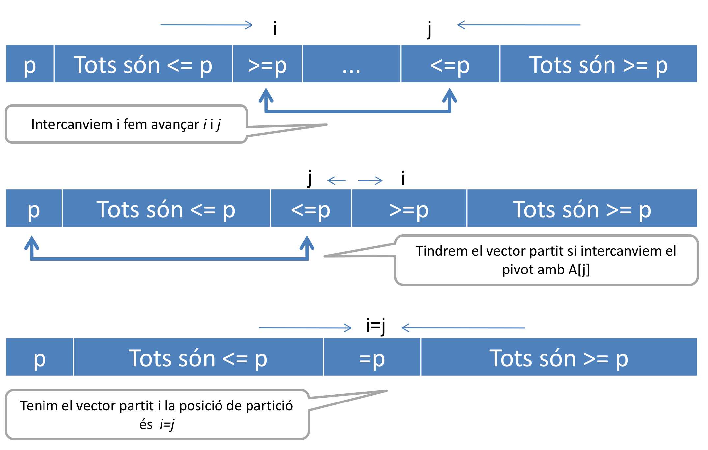
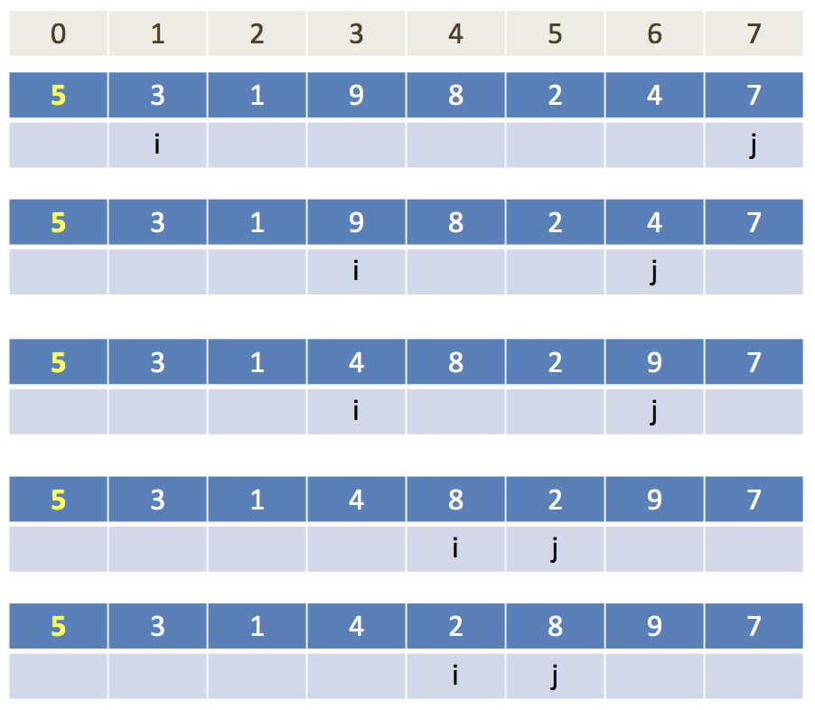
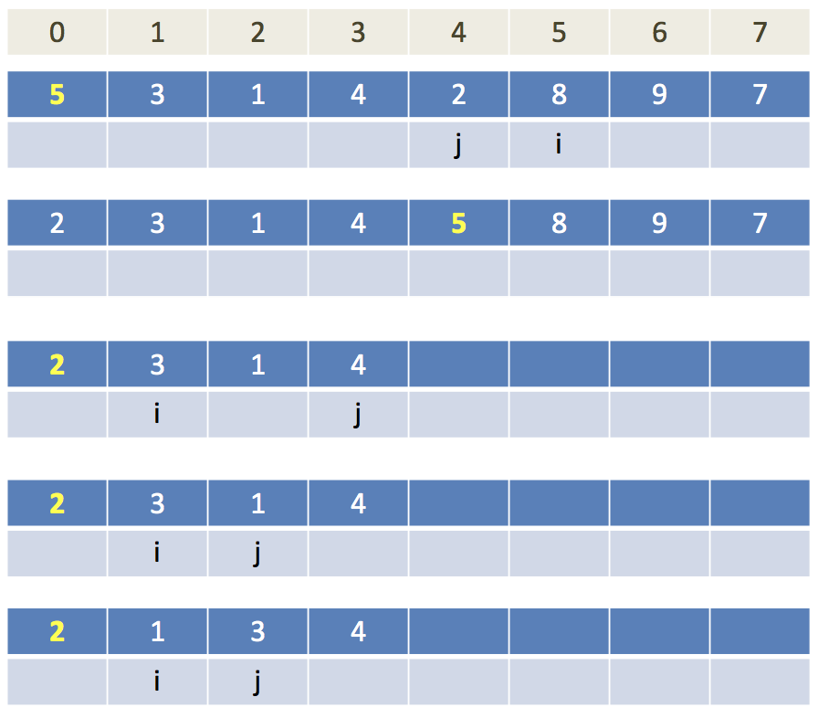
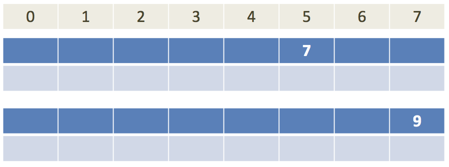
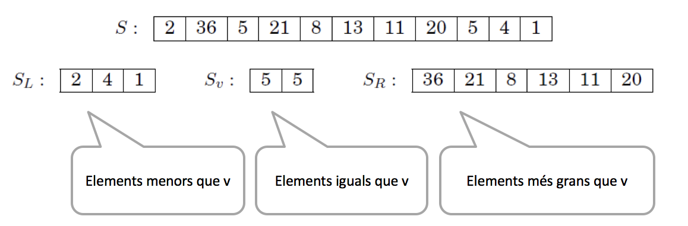
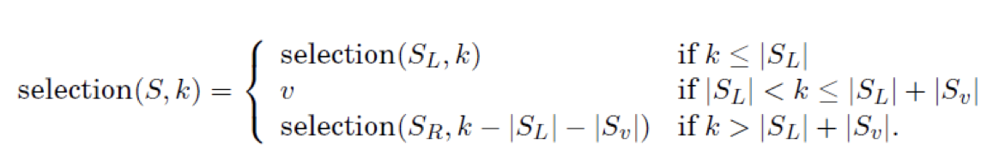

class: center, middle <center><img src="images/ub.png" width="150"></center> # **ALGORÍSMICA** ## Algorismes Dividir i Vèncer Jordi Vitrià, Mireia Ribera .blue[jordi.vitria@ub.edu] | .blue[ribera@ub.edu] --- ## Estratègies recursives per resoldre problemes. Suposem que volem sumar una llista llarga de nombres. Els ordinadors (i les persones) només saben fer sumes de 2 en dos xifres. Per tant, hem de fer un algorisme que expressi la suma dels elements d'una llista en termes de sumes de 2 elements. La forma més intuitiva és resoldre el problema de **forma seqüencial**, començant per la suma dels dos primers elements, acumular el resultat i anar fent sumes amb la resta dels elements de la llista fins que arribem al final: ```python a = [4,6,3,2,8,7,5,1] def sum1(a): sum = 0 for i in a: sum += i return sum print(sum(a)) >> 36 ``` <div class=warnred> .bold[Pregunta]: <br> Quantes sumes realitza aquest algorisme?</div> </div> --- ## Estratègies recursives per resoldre problemes. Però també ho podem reformular d'una altra manera: **anar dividint de forma recursiva el problema en subproblemes més petits** i senzills, **fins que arribem a un cas molt simple**, que resolem, per després reconstruïr el resultat del problema global: <center></center> --- ## Estratègies recursives per resoldre problemes. L'implementació podria ser (per llistes amb un nombre d'elements que sigui potència de 2): ```python def sum2(a): if len(a) == 2: return a[0]+a[1] return sum2(a[0:int(len(a)/2)]) + sum2(a[int(len(a)/2):len(a)]) ``` En aquest cas la divisió recursiva en problemes més petits no ha resultat ser una gran idea des del punt de vista de la complexitat computacional: farem el mateix nombre de sumes que si ho féssim de forma sequencial! Però a vegades ho pot ser! <div class=warnred> .bold[Exercici]: <br> Adapteu aquest algorisme per processar llistes amb un nombre d'elements que no sigui potència de 2. </div> <div class=warnred> .bold[Pregunta]: <br> Quantes sumes realitza aquest algorisme?</div> </div> --- name:divvenc ## Algorismes de dividir i vèncer Dividir i vèncer és una **estratègia de resolució de problemes** consistent en: + Dividir un problema en subproblemes que són instàncies més petites (des del punt de vista de la mida de l'entrada) del mateix problema. + Resoldre recursivament aquests subproblemes. + Combinar adequadament les solucions dels subproblemes per trobar la solució del problema original. -- Les **qüestions a resoldre** són tres: + Com anem dividint el problema en subproblemes de forma recursiva? + Com aturem la recursió i donem una solució al darrer subproblema? + Com combinem les solucions recursives per assolir la solució del problema complet? --- ## Exemple: Suma (recursiva) dels elements d'una llista. La suma seqüencial dels elements d'un a llista també es pot expressar recursivament: ```python def sum(l): if len(l) == 1: return l[0] else: return l[0] + sum(l[1:]) a =[5,7,3,8,10] ``` <div class=warnred> .bold[Pregunta]: <br> Quina complexitat té aquest algorisme?</div> -- > `O(n)` <center><img src="images/suma recursiva.png" width="150" alt="una cadena amb un darrer element '4' amb un retorn de 4, un element '3,4' amb un retorn de 3 + 4 = 7, un element '7,3,4' amb un retorn de 7+7 = 14, un element '5,7,3,4' amb un retorn de 14+5=19"></center> --- ## Algorismes de dividir i vèncer: relacions de recurrència. L’esquema general d’aquests algorismes és: > Tenim un problema de mida `n`, que reformulem mitjançant la solució d’`a` problemes de mida `n/b` i llavors combinem les respostes en un temps \\( O(n^d) \\). <div class=warnred> .bold[Observació]: <br> En el cas de l'algorisme <code>suma2</code>, tenim a= 2, b = 2 i d = 0.</div> La complexitat d'un problema d'aquest tipus es pot deduïr a partir de veure la seva relació de recurrència: $$ T(n) = a T(n/b) + O(n^d) $$ Aquest tipus de recurrència té una **solució tancada**, que està enunciada al **Teorema Master**. --- name:master ### Teorema Master ___ **Teorema:** Si `T(n)=aT(n/b)+O(n^d)` per algunes constants `a>0`, `b>1`, i `d>=0`, llavors: + **Cas 1**: \\( T(n) = O(n^d) \\) si \\( d > \log_b a \\), o el que és el mateix \\( a < b^d \\). + **Cas 2**: \\( T(n) = O(n^d \log n) \\) si \\( d = \log_b a \\), o el que és el mateix \\( a = b^d \\). + **Cas 3**: \\( T(n) = O(n^{\log_b a}) \\) si \\( d < \log_b a \\), o el que és el mateix \\( a > b^d \\). ___ Fixeu-vos que en el cas 1 el que mana és el cost de la combinació de solucions per què `d` és molt gran. En el cas 3, en canvi, el que mana és \\( \log_b a \\) que serà gran quan hi hagi molts subproblemes i no es redueixin gaire en cada divisió. En el cas 2 àmbdues complexitats estan equilibrades. <div class=warnred> .bold[Aplicació de l'algorisme]: <br> L'algorisme <code>suma2</code> té <code>a</code>= 2, <code>b</code> = 2 i <code>d</code> = 0. Per tant aplica el cas 3 del teorema i té <code>O(n)</code></div> </div> --- ## Algorismes de dividir i vèncer: relacions de recurrència. ** Exemple 1:** Si tenim un determinat problema que es pot dividir en 2 subproblemes (`a = 2`), cada un dels quals processa unes dades que són `1/2` de les originals (`b = 2`), i la reconstrucció de la solució en costa `O(n^2)`... -- ... podem aplicar el cas (1) del teorema Master, perquè `2>log_2=1` ... -- i per tant resulta `O(n^2)`. --- ## Algorismes de dividir i vèncer: relacions de recurrència. ** Exemple 2:** Si tenim un determinat problema que es pot dividir en 16 subproblemes (`a = 16`), cada un dels quals processa unes dades que són `1/4` de les originals (`b = 4`), i la reconstrucció de la solució en costa `O(n)`... -- la complexitat és `O(n^2)`. --- ## Algorismes de dividir i vèncer per ordenar: *mergesort* i *quicksort* A continuació veurem dos algorismes que ens ajudaran a ordenar una llista de forma més eficient, concretament amb una complexitat d'`O(n log n)`. Cadascun usa alguna funció auxiliar per preparar (`partition` al *quicksort*) o per recombinar (`merge` al *mergesort*) els subproblemes en que es basa la divisió. --- name:mergesort ## Algorismes de dividir-i-vèncer: **merge** Suposem que tenim dos conjunts de cartes, amb `n` elements cada un, que estan ordenats de menor a major (quan les posem de cara la més petita està al davant). En aquest cas concret podem obtenir una llista ordenada barrejant les dues si seguim aquests passos: 1. Comparem les dues cartes de sobre de tot de cada conjunt i escollim la més petita, que posem a un nou conjunt de cartes ordenades (pel darrera, si n’hi ha alguna). 2. Repetim 1 fins que un dels conjunts estigui buit, i el conjunt que encara té cartes l’afegim per darrera al conjunt de cartes ordenades. El resultat és un conjunt de cartes ordenades! --- ## Algorismes de dividir-i-vèncer: **merge** <center></center> --- ## Algorismes de dividir-i-vèncer: **merge** <center></center> --- ## Algorismes de dividir-i-vèncer: **mergesort** Però en el cas general no partim de dos conjunts de cartes ordenades! `merge` és una funció auxiliar de l'algorisme general d'ordenació *mergesort*. El que podem fer és descomposar el problema en subproblemes més petits fins que arribem als casos que sabem resoldre! Això ho podem expressar recursivament: ```python def mergesort(list): if len(list) < 2: return list else: middle = len(list) // 2 left = mergesort(list[:middle]) right = mergesort(list[middle:]) return merge(left, right) ``` La correcció d’aquest algorisme és evident, sempre i quan definim bé la funció `merge`. --- ## Algorismes de dividir-i-vèncer: **mergesort** <center></center> --- ## Algorismes de dividir-i-vèncer: **merge** La funció `merge` també la podem definir recursivament: ```python def merge(x,y): if len(x) < 1: return y if len(y) < 1: return x if x[0] <= y[0]: return [x[0]] + merge(x[1:],y) else: return [y[0]] + merge(x,y[1:]) ``` Aquesta funció es pot definir també de forma NO recursiva, i és simplement anar comparant i copiant de forma ordenada els dos vectors en un nou vector. --- ## Algorismes de dividir-i-vèncer: **merge** La versió no recursiva de `merge` seria aquesta: ```python def merge(left, right): result = [] i ,j = 0, 0 while(i < len(left) and j < len(right)): if (left[i] <= right[j]): result.append(left[i]) i = i + 1 else: result.append(right[j]) j = j + 1 result += left[i:] result += right[j:] return result ``` --- ## Algorismes de dividir-i-vèncer: **mergesort** Quina és la complexitst d'aquest algorisme? La funció `merge` té una complexitat per cada crida recursiva `O(n)` (en el pitjor dels casos). Com que aquesta és la funció que usem per combinar les solucions parcials, `d=1`. Quan dividim creem 2 problemes, de mida `n/2`. Per tant, com que `a=2` i `b=2`, `log_b a = 1`, que és igual a `d`, podem aplicar el cas 2 del teorema Master: **`mergesort` té una complexitat `O(n log n)`.** La funció mergesort es pot implementar iterativament, de forma no recursiva, en la seva totalitat, però per fer-ho necessitem una estructura que no veurem en aquesta assignatura: la cua. --- name:quicksort ## Algorismes de dividir-i-vèncer: **quicksort** **Quicksort** és un altre algorisme d’ordenació basat en l’estratègia de dividir i vèncer. Aquest algorisme divideix el vector basant-se en els valors dels elements que conté: reordena els elements per aconseguir una **partició**, una situació en la que tots els elements anteriors a una posició `s` siguin menors o iguals que `A[s]` i tots els elements posteriors a la posició `s` siguin majors o iguals que `A[s]`: `A[0] ... A[s-1] <= A[s] <= A[s+1] ... A[n-1]` L'element `A[s]` s'anomena **pivot**. > Per exemple: > `3 56 34 2 <= 99 <= 134 345 111` > és una partició de la llista `[3 99 56 134 34 2 345 111]` --- ## Algorismes de dividir-i-vèncer: **quicksort** Òbviament, si tenim aquesta situació, `A[s]` ja està al seu lloc i no s’haurà de moure, i podem passar a ordenar el que hi ha a ambdues bandes: ```python def quick_sort(A): quick_sort_r(A, 0, len(A) - 1) # quicksort_r té més paràmetres per # facilitar les crides recursives def quick_sort_r(A , first, last): # A és la llista, first i last els índexs # entre els quals cal ordenar if last > first: pivot = partition(A, first, last) # dividim el problema quick_sort_r(A, first, pivot - 1) # ordenem part esquerra quick_sort_r(A, pivot + 1, last) # ordenem part dreta ``` --- ## Algorismes de dividir-i-vèncer: **partition** Com calculem la partició d’una llista `A`? + Primer seleccionem un element, respecte del qual dividirem la subllista, que anomenarem el **pivot**. Per exemple, escollim `pivot=A[first]`. + Després hem de reordenar per aconseguir una partició. Això ho podem fer amb dues passades (d’esquerra a dreta i de dreta a esquerra) de la llista. + La passada d’esquerra a dreta `(i)` comença pel segon element `i` no s’atura fins trobar un element més gran o igual que el pivot `(p)`. + La passada de dreta a esquerra `(j)` comença per l’últim element i s’atura quan troba un element més petit o igual que el pivot. --- ## Algorismes de dividir-i-vèncer: **partition** Quan les dues passades s’aturen, ens podem trobar en tres situacions: <center></center> --- ## Algorismes de dividir-i-vèncer: **partition** ```python def partition(A, first, last): # ordenem A[first],A[mid],A[last] mid = (first + last)//2 if A[first] > A [mid]: A[first], A[mid] = A[mid], A[first] if A[first] > A [last]: A[first], A[last] = A[last], A[first] if A[mid] > A[last]: A[mid], A[last] = A[last], A[mid] A[mid], A[first] = A[first], A[mid] # inicialitzem pivot, i i j pivot = first i = first + 1 j = last while True: # anem avançant while i <= last and A[i] <= A[pivot]: i += 1 while j >= first and A[j] > A[pivot]: j -= 1 if i >= j: break else: A[i], A[j] = A[j], A[i] # intercanviem, fem avançar i j A[j], A[pivot] = A[pivot], A[j] # vector partit, pivot=j return j quick_sort([3,7,2,4,1,80]) >>> [1,2,3,4,7,80] ``` --- ## Algorismes de dividir-i-vèncer: **quicksort** <center></center> --- ## Algorismes de dividir-i-vèncer: **quicksort** <center></center> --- ## Algorismes de dividir-i-vèncer: **quicksort** <center><img src="images/quicksort4.png" width="500" alt="passos de l'algorisme quicksort"></center> --- ## Algorismes de dividir-i-vèncer: **quicksort** <center><img src="images/quicksort5.png" width="500" alt="passos de l'algorisme quicksort"></center> --- ## Algorismes de dividir-i-vèncer: **quicksort** <center></center> **Quicksort** és l’algorisme que fa servir Linux/Unix per ordenar amb la seva instrucció `sort`. --- ## Algorismes de dividir-i-vèncer: **quicksort** Quina és l’eficiència del quicksort? > Observació: el nombre de comparacions que fa abans d’una partició són `n+1` si els índexs es creuen i `n` si coincideixen. Si totes les particions passen al mig del vector tenim **el millor cas**, i el nombre de comparacions serà: `T(n) = 2 T(n/2) + n`, que segons el teorema Master és `O(n log n)`. En **el pitjor cas** (p.e. [4,3,2,1,0]), totes les particions són als extrems (alguna de les subllistes estarà buida), llavors el nombre de comparacions serà `T(n) = O(n^2)`. > Observació: Sempre podem desordenar la llista al principi i aquest cas no existirà mai! En el **cas promig** el nombre de comparacions serà `O(1,38 n log_2 n)`, és a dir, un 38% més de comparacions que en el millor cas. La complexitat se seguiria expressant com a **O(n log n)**. --- name:mediana ## Algorismes de dividir-i-vèncer: càlcul de la **mediana** La mediana de `[45,1,10,30,25]` és `25`, perquè la **mediana** es defineix com l’element que queda al mig del vector si ordenem els seus elements. Per tant, la seva implementació directa és `O(n log n)`. **Ho podem fer lineal?** -- Considerem el següent problema (que subsumeix el problema de la mediana): >Entrada: Una llista de nombres `S`; un enter `k`. >Sortida: El `k`-èssim element més petit de `S`. Per exemple, si `k=1`, la sortida hauria de ser el valor mínim de `S`. --- ## Algorismes de dividir-i-vèncer: càlcul de la mediana Anem a plantejar una solució de dividir i vèncer. Suposem un nombre qualsevol `v` i que fem una partició de la llista segons aquest nombre (per exemple, `v=5`) en tres parts, `Sleft`, `Sv` i `Sright`: <center></center> --- ## Algorismes de dividir-i-vèncer: càlcul de la mediana Ara la cerca es podria limitar a una de les tres subllistes: si busquéssim el 8è element, ha de ser el tercer element més petit de `Sright` atès que a `Sleft` i `Sv` hi ha un total de 5 elements. En general: <center>len(Sleft) i k<=Sleft+Sv; selection(Sright, k-len(Sleft)-len(Sv) si k>length(Sleft)+len(Sv)"></center> Aquestes subllistes es podem calcular en temps lineal! --- ## Algorismes de dividir-i-vèncer: càlcul de la mediana Ja tenim l’algorisme recursiu definit, però encara no sabem com definir `v`. L’ideal seria que `v` partís les llistes per la meitat. Aleshores la complexitat seria `T(n) = T(n/2) + O(n)`, que és una complexitat lineal!! -- La solució és triar-lo de forma aleatòria cada vegada! + En el pitjor cas farem: ` n + (n-1) + (n-2) + ... = O(n^2)`. + En el millor cas farem `O(n)`. + En el cas promig es pot demostrar que és `O(n)`. --- ## Algorismes de dividir-i-vèncer: càlcul de la mediana ```python import random def kSelect(A,k,length): # escollim una posició r random( 1 - length(A)) n = length-1 r = random.randint(0, length-1) A1 = [] A2 = [] pivot = A[r] for i in range ( 0 , n+1): # construim la llista més petita i la més gran if A[i] < pivot : A1.append(A[i]) if A[i] > pivot : A2.append(A[i]) if k <= len(A1): # cerquem a la llista dels elements mes petits return kSelect(A1, k ,len(A1)) if k > len(A) - len(A2): # cerquem a la llista dels elements mes grans return kSelect(A2, k-(len(A)-len(A2)),len(A2)) else : return pivot ```